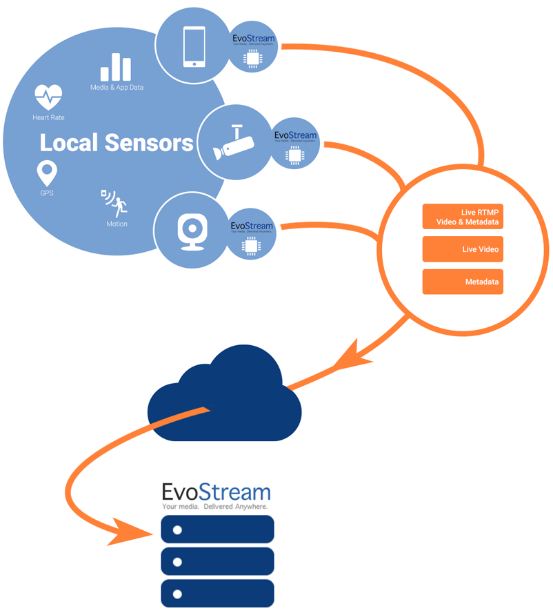
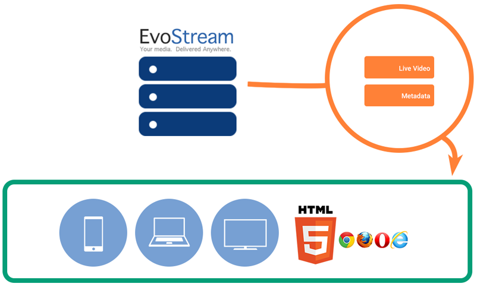

Capabilities
Lazy Pull - .vod Files
Lazy Pull is used to perform pullStream commands on demand. This feature allows you to conserve your bandwidth by only pulling streams when they are actually requested by clients!
VOD files are currently supported for RTMP and RTSP stream requests.
To use Lazy Pull, simply create .vod files within one of the configured EMS media folders. Clients can then make requests on the .vod file just like it was a normal media file (such as mp4):
rtmp://127.0.0.1/vod/mp4:myFile.mp4
The construction of VOD files is very simple, it is merely the same parameters you would use in a pullStream command placed on separate lines.
An example VOD file is as follows:
uri=rtsp://IPofEMS/myStream
forceTCP=1
If you want to keep the source stream even after all clients have disconnected, you need to use the keepAlive parameter:
uri=rtsp://IPofEMS/myStream
forceTCP=1
keepAlive=1
The only pullStream parameter which is NOT available within a VOD file is:
- localStreamName – The local name of the stream will always be the same as the .vod file being used.
VOD files can be generated on-the-fly manually or by any other process. The EMS will look for the .vod file only when a client requests it.
Server-Side Playlists
Playlist File
Playlist Files are simple text files which can be placed into one of the EvoStream Media Server’s configured media directories (as defined in the config.lua file). Playlist Files allow users to specify a list of streams, both live and recorded, which are played back in sequence upon a client request.
Playlist files MUST have the “.lst” extension.
An example Playlist File is as follows:
# sourceOffset, duration, localStreamName
0,-1,startingAd.mp4
-1,60,liveStream1
0,-1,Ad2.mp4
-1,-1,liveStream1
The first line of the file (beginning with the comment delimiter ‘#’) is a comment describing the format of each of the subsequent line. Each line after the first specifies a stream to play and can either be a live stream or a VOD/media file. The EMS will start with the first item in the list for playback and will move sequentially down the file. The localStreamName value specifies either a live stream or the path (relative to one of the EMS media directories) of a media file. The fields sourceOffset and duration specify what part of the source stream to play and for how long. The values for sourceOffset and duration are defined specifically as follows:
- sourceOffset specifies the starting position, in seconds, of the source stream. This parameter can also be used to indicate whether the stream is live or recorded.
- -2 means that the EMS will look for a live stream with the
localStreamNamespecified. If a live stream is not found, it will attempt to play a media file with thelocalStreamName. If a media file with that name and path cannot be found, the EMS will wait for a live stream to become available. - -1 implies that the
localStreamNameis explicitly a live stream. If no live stream is found, the EMS waits indefinitely ifdurationis set to -1. Ifdurationis another value the EMS will waitdurationseconds before moving to the next item in the playlist. - 0 or a positive number implies that the specified
localStreamNameis a media file. The EMS will start playbacksourceOffsetseconds from the beginning of the file. If no file is found the playlist item is skipped. - Any negative number other than -1 or -2 will be assumed to be -2.
- -2 means that the EMS will look for a live stream with the
- duration specifies the length of the playback of the stream in seconds.
- All positive numbers will cause the EMS to play the stream for
durationseconds or until the end of the media file or live stream, whichever comes first. - 0 means that only a single frame of the stream will be played.
- -1 means that the EMS will play a live stream until it is no longer available or a media file until its end.
- -2 will play media files until their end (same as -1 behavior). For live sources, it will play the live stream until that stream is no longer available. When the source stream is lost the EMS shall move to the next item in the playlist.
- Any negative number other than -1 or -2 will be assumed to be -2
- All positive numbers will cause the EMS to play the stream for
Playlist Playback
Playing a playlist is very simple and can be done just like requesting a media file playback. From a flash player, simply request a stream with a URI of:
rtmp://IPofEMS/vod/myPlaylist.lst
You will of course need to use an appropriate domain name or IP for your EMS server and use the name of your playlist file.
Playlists can only be directly played from Flash/RTMP clients . However, playlists can be used by other types of clients/players via a simple redirect if needed. Simply issue a pullStream for the needed playlist:
pullStream uri=rtmp://localhost/vod/myPlaylist.lst localstreamname=livePlaylist
Users may then request the stream livePlaylist which will be the normal play-out of the playlist, but can be accessed via any protocol supported by the EMS.
Playlist Manipulation
The EMS provides a simple mechanism for manipulating a playlist which is currently being viewed. The insertPlaylistItem API funcation allows users to insert live streams and video files into the playlist. These new items are added with a specific start time. When that start time is “now” the source of the stream will be immediately switched to the new playlist item. This leads to an entire collection of uses:
- Manual Ad Insertion
- Source/View switching (think player 1 view switching to player 2’s view)
- Adding a fallback stream for a defunct source.
- On the fly channel programming
Note:
The playlist file will NOT be modified by this function, only the “in-memory” representation of the file. When all viewers of the playlist disconnect, the temporary copy will be deleted and all changes will be lost._
DVR Playback
The EMS fully supports pause, play, and seek-catchup Digital Video Recorder (DVR) functionality through its HLS and DASH protocols. Please see the HLS and DASH sections for more detail.
Transcoding
The EMS is packaged with a software encoder which provides a wide variety of additional functionality to the EMS. EvoStream has chosen LibAV’s AVConv encoder to be distributed, unmodified, along with the EMS. Source code for AVConv can be found at http://libav.org/download.html. EvoStream complies fully with the GPL in relation to the distribution of AVConv.
The EMS can be easily configured to use ANY software encoder. If a different software encoder is desired, the integration requires only a change to a script, something that can be done on-demand.
Transcoding is an inherently complicated process, given the huge variety of options available for compressing audio and video. The EMS provides a simple transcode API which makes the entire process very easy.
Changing Stream Bitrates
A common use case for transcoding involves the “translating”(down-scaling) of an HD stream into lower bitrates to support Adaptive Streaming protocols and smaller clients like Android and iOS devices.
The simplest way to accomplish this is to bring the original HD stream into the EMS. You can then issue a command similar to the following to create multiple streams with lower bitrates:
transcode source=Source1 groupName=group1 videoBitrates=100k,200k,300k destinations=stream100,stream200,stream300
This command takes the “Source1” stream and creates 3 new streams within the EMS. Stream100 has a bit rate of 100kbps, stream200 has a bit rate of 200kbps and stream300 has a bit rate of 300kbps.
You can then take each of those final streams and access them directly (IE: via RTMP or RTSP), or you can create an HLS group out of them to create an adaptive bitrate stream for iOS devices:
createhlsstream localstreamnames=stream100,stream200,stream300 targetfolder=/mywebroot/hls groupname=MyGroup playlisttype=rolling playlistLength=10 chunkLength=5
To playback this group of adaptive streams, you simply need to direct your HLS player to:
http://IPofEMS:8888/hls/MyGroup/playlist.m3u8
Using Different Codecs
The EMS requires streams to be of type H.264/AAC, but that may not be the format your stream source is in. The EMS Transcoder can be used to convert your source stream into H.264/AAC:
transcode source=rtsp://IpOfStreamSource:554/StreamName groupName=group1 videoBitrates=5000k audioBitrates=800k destinations=StreamName
This command pulls the source stream from its RTSP source directly, transcodes it, and passes it to the EMS as “StreamName”. The videoBitrates parameter must be specified when transcoding the video codec. The audioBitrates parameter must be specified when transcoding the audio codec. If either the audio or video does not need to be transcoded, that parameter may be skipped. Here it is assumed that the source stream has a video bit rate of around 5Mbps and audio bitrate of around 800kbps.
Video Overlays – Watermarking
The EMS Transcoder may be used to generate overlays on top of your videos. PNG or JPEG images with alpha layers (transparency) should be used. The image must be at the same or smaller resolution (height and width) of the video you are overlaying. The overlay file will be placed at the top-left corner of the video. To create the overlay, simply issue the following command:
transcode source=SourceStream groupName=group1 overlays=/path/to/overlay.png destinations=OverlayedStream
Cropping
In some cases, you may want to crop a video and focus on just a portion of the video. The EMS Transcoder supports video cropping.
transcode source=SourceStream groupName=group1 croppings=0:0:50:50 destinations=CroppedStream
This creates a resultant stream containing only a square 50px by 50px from the top right corner of the video. The format for the croppings parameter horizontalPosition:verticalPosition:width:height where horizontalPosition=0 at leftmost pixel, verticalPosition=0 at uppermost pixel.
VOD File Redirection
The EMS can be enabled to look for a VOD file in another EMS instance if it does not exist in the EMS from which the request was made. This only works for RTMP playback.
To enable this, the vodRedirectRtmpIp in the applications section of config.lua should have a value, the IP address of the other EMS from which the file can be found:
applications=
{
rootDirectory="./",
{
-- content removed for clarity
vodRedirectRtmpIp="IP ADDRESS",
-- content removed for clarity
},
}
By default, vodRedirectRtmpIp has no value, and if the file requested is not found, the connection will remain open waiting for a stream to exist. But if this feature is enabled, the EMS will get the value of vodRedirectRtmpIp which points to a second EMS instance that contains the requested file. The first EMS instance makes a pullstream request on the second EMS instance and the stream resulting from this is then used to serve the original client request.
Metadata
Metadata is data about data, or in this case, data about and/or related to streams. However, EMS offers ingest and delivery of these data that can virtually be anything: location data, images (like thumbnails), heart-rate data, etc. The current input format uses JSON but other forms can be added as needed. These metadata can then be sent to different players and/or another EMS endpoint.
Ingestion and Aggregation

EMS accepts metadata, as well as live RTMP streams with metadata incorporated. EMS has two ways of accepting metadata: one is through a TCP acceptor, and the other is through websockets, which has been discussed in the HTML5 Web Sockets section.
The TCP and websockets acceptors are enabled by default but can be customized through the configuration file, config.lua.
acceptors =
{
-- content removed for clarity
-- Inbound JSON Metadata TCP acceptor
{
ip="0.0.0.0",
port=8110,
protocol="inboundJsonMeta",
streamname="v4l2"
},
-- WebSockets JSON Metadata
{
ip="0.0.0.0",
port=8210,
protocol="wsJsonMeta",
streamname="~0~0~0~"
},
-- content removed for clarity
},
On both acceptors, the streamname parameter is optional, default will match all incoming streams.
Once a metadata is received, the EMS Metadata Manager stores these metadata and also incorporates them to the corresponding RTMP stream for outbound if needed.
Metadata Delivery

EMS offers two mechanisms to send out the metadata it currently have. The first, is to have the clients manually query and poll EMS for the metadata. This is done through the following command:
getMetadata localStreamName=test
This command will return the corresponding metadata related to the stream “test”.
The second mechanism is to send out metadata updates through a TCP connection. This assumes that the other endpoint would be able to parse the incoming metadata in JSON format. This mechanism is enabled through the following command:
pushMetadata localStreamName=test ip=192.168.2.1 port=8110
This will push updated metadata to a server which has an IP address of 192.168.2.1 and is able to listen to incoming traffic on port 8110.
The third mechanism of delivering metadata is through websockets. Any clients connected to the metadata websocket acceptor would be able to, not only send out metadata to EMS, but also receive metadata updates from EMS as well.